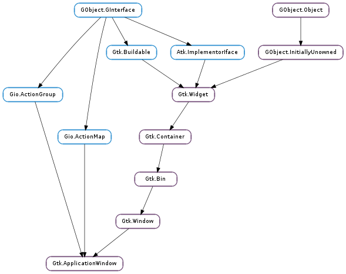

| static | new(application) |
| get_id() | |
| get_show_menubar() | |
| set_show_menubar(show_menubar) |
| Name | Type | Flags | Description |
|---|---|---|---|
| bool | r/w | True if the window should show a menubar at the top of the window |
None
| Name | Type | Access |
|---|---|---|
| parent_instance | Gtk.Window | r |
Bases: Gtk.Window, Gio.ActionGroup, Gio.ActionMap
Gtk.ApplicationWindow is a Gtk.Window subclass that offers some extra functionality for better integration with Gtk.Application features. Notably, it can handle both the application menu as well as the menubar. See Gtk.Application.set_app_menu () and Gtk.Application.set_menubar ().
This class implements the Gio.ActionGroup and Gio.ActionMap interfaces, to let you add window-specific actions that will be exported by the associated Gtk.Application, together with its application-wide actions. xlib.Window-specific actions are prefixed with the “win.” prefix and application-wide actions are prefixed with the “app.” prefix. Actions must be addressed with the prefixed name when referring to them from a Gio.MenuModel.
Note that widgets that are placed inside a Gtk.ApplicationWindow can also activate these actions, if they implement the Gtk.Actionable interface.
As with Gtk.Application, the GDK lock will be acquired when processing actions arriving from other processes and should therefore be held when activating actions locally (if GDK threads are enabled).
The settings Gtk.Settings :gtk-shell-shows-app-menu and Gtk.Settings :gtk-shell-shows-menubar tell GTK+ whether the desktop environment is showing the application menu and menubar models outside the application as part of the desktop shell. For instance, on OS X, both menus will be displayed remotely; on Windows neither will be. gnome-shell (starting with version 3.4) will display the application menu, but not the menubar.
If the desktop environment does not display the menubar, then Gtk.ApplicationWindow will automatically show a Gtk.MenuBar for it. (see the Gtk.Application docs for some screenshots of how this looks on different platforms). This behaviour can be overridden with the Gtk.ApplicationWindow :show-menubar property. If the desktop environment does not display the application menu, then it will automatically be included in the menubar.
A Gtk.ApplicationWindow with a menubar
app = gtk_application_new ();
builder = gtk_builder_new ();
gtk_builder_add_from_string (builder,
"<interface>"
" <menu id='menubar'>"
" <submenu label='_Edit'>"
" <item label='_Copy' action='win.copy' />"
" <item label='_Paste' action='win.paste' />"
" </submenu>"
" </menu>"
"</interface>");
gtk_application_set_menubar (G_APPLICATION (app),
G_MENU_MODEL (gtk_builder_get_object (builder, "menubar")));
g_object_unref (builder);
...
window = gtk_application_window_new (app);
Handling fallback yourself FIXME: MISSING XINCLUDE CONTENT
The XML format understood by Gtk.Builder for Gio.MenuModel consists of a toplevel menu element, which contains one or more item elements. Each item element contains attribute and link elements with a mandatory name attribute. link elements have the same content model as menu.
Attribute values can be translated using gettext, like other Gtk.Builder content. attribute elements can be marked for translation with a translatable="yes" attribute. It is also possible to specify message context and translator comments, using the context and comments attributes. To make use of this, the Gtk.Builder must have been given the gettext domain to use.
| Parameters: | application (Gtk.Application) – a Gtk.Application |
|---|---|
| Returns: | a newly created Gtk.ApplicationWindow |
| Return type: | Gtk.Widget |
Creates a new Gtk.ApplicationWindow.
| Returns: | the unique ID for window, or 0 if the window has not yet been added to a Gtk.Application |
|---|---|
| Return type: | int |
Returns the unique ID of the window. If the window has not yet been added to a Gtk.Application, returns 0.
| Returns: | True if window will display a menubar when needed |
|---|---|
| Return type: | bool |
Returns whether the window will display a menubar for the app menu and menubar as needed.
| Parameters: | show_menubar (bool) – whether to show a menubar when needed |
|---|
Sets whether the window will display a menubar for the app menu and menubar as needed.